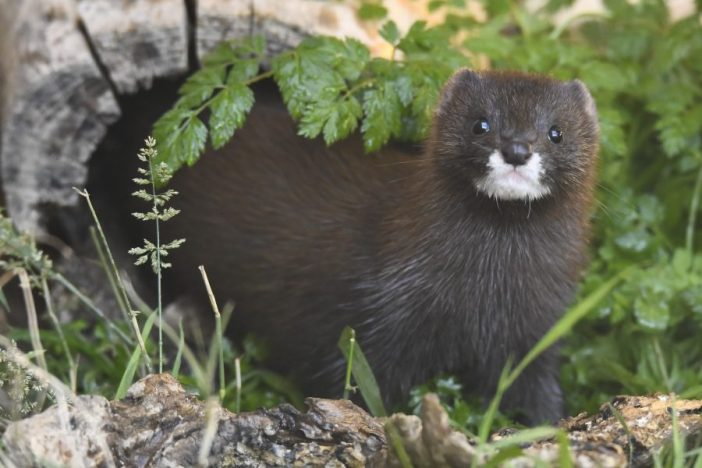

Visón Europeo
Otro de los mamíferos más amenazados del continente es el visón europeo.
En este caso, su situación se debe a una combinación principal de dos factores.
Por un lado, el visón europeo se ha enfrentado a la caza indiscriminada durante décadas,
a lo que hay que sumar la presencia de especies invasoras, en concreto el visón americano,
que es el principal competidor que tiene actualmente en su hábitat natural.
Se calcula que hoy en día su población se reduce a menos de 500 ejemplares.

España Un Grave Peligro Con Su Biodiversidad
La biodiversidad de España se encuentra entre las más ricas de Europa. Pero también es una de las más
frágiles.
Por diferentes motivos aunque, principalmente, por las actividades humanas,
muchas especies se encuentran en peligro real de extinción,
siendo los anfibios y los mamíferos los que corren más peligro.
Además, en otras muchas su población ha disminuido
AYUDANOS A SALVAR ESTOS ANIMALES, DONANDO A NUESTRA FUNDACION